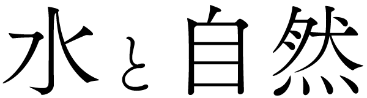

屋久島
全面積の約9割を山岳地帯が占め、標高1,936 mを誇る九州最高峰の宮之浦岳をはじめ1,000m級の山々が連なるため、「洋上のアルプス」と呼ばれることもある。「一ヶ月に35日雨が降る」といわれるほど、年間を通して湿潤な気候である。
白谷雲水峡
屋久島は、特殊な多雨環境に適応した渓流植物や着生植物を豊富に含む特殊な生態系を有している。その中でも、屋久島には日本に存在する1600種類の苔のうち、約600種類もの苔が生息している。
綺麗な水に湿気の多い渓谷である白谷雲水峡では美しい緑の苔の森を見ることができる。コケやシダに覆われた神秘的な森は、宮崎駿監督の映画「もののけ姫」の舞台となったと言われている。
大川の滝
屋久島のほぼ南西部に位置しており、水量・規模ともに九州最大級で、落差は88mを誇る。日本の滝百選にも選ばれており、周囲が山と緑に囲まれた秘境的な存在。滝つぼにはハゼの仲間であるヨシノボリなどが棲息。周辺では川辺の野鳥のカワセミなどを観察できる。